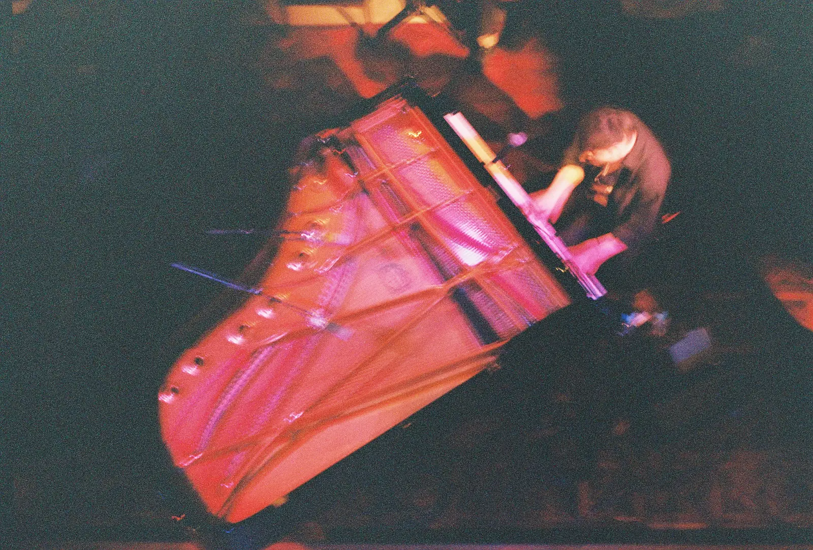

Logを受け取る
ツアー当日までの記録を、無料の便りでお届けします。当日へ向かう時間と空気感を共有します。

分からなくていい。ただ心を揺さぶられること。
ニューヨークを拠点にするピアニスト、Takahiro Izumikawa の日本公演。
10月26日、大阪はピアノ一台で。30日東京はフルバンドで、新しいジャンル YATARA のお披露目。
ツアー当日までの記録を、無料の便りでお届けします。当日へ向かう時間と空気感を共有します。
クルーとして、制作の内側から目撃する。
10月30日 晴れたら空に豆まいて公演当日のサウンドチェック見学や
舞台裏・リハ動画・演奏動画など、
クルーにだけ届くデジタルコンテンツ。